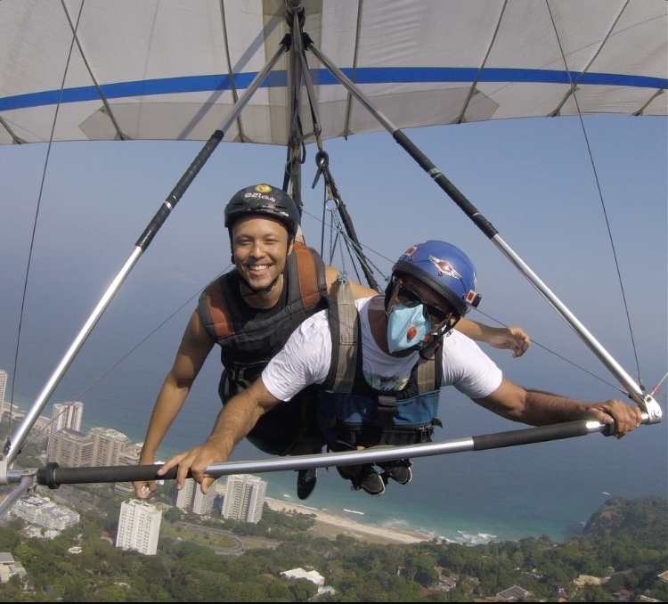
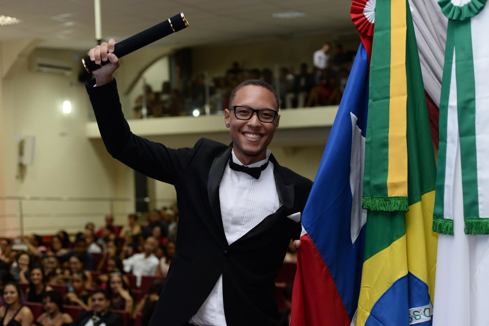
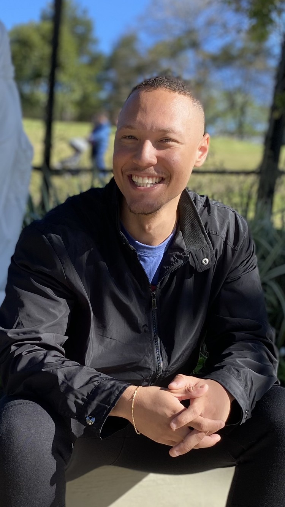
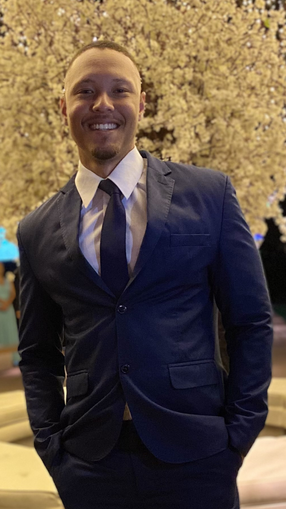

17 de maio de 2023
VINÍCIUS FÉLIX SANTOS DE JESUS
Ao clicar em qualquer local deste currículo, é possível acessar o meu perfil no LinkedIn.
Sobre mim...

Sou Vinícius Félix Santos de Jesus, nascido em 1998, em Salvador -
Bahia, onde atualmente resido. Me considero uma pessoa corajosa,
curiosa, responsável e sempre em busca do próprio crescimento
contínuo. Assim como todos, possuo medos e receios sobre o presente e
o futuro da trajetória que irei trilhar. No entanto, essas reflexões
fazem com que eu valorize minha caminhada, esteja grato por todos os
momentos bons e ruins, e me esforce cada vez mais para alcançar meus
objetivos. Embora precise superar desafios como trabalhar sob pressão
e timidez, estou constantemente buscando oportunidades para melhorar.
Além disso, me considero uma pessoa batalhadora, guerreira e
resiliente, diante dos tantos desafios que já ultrapassei e dos outros
que virão. Portanto, posso dizer que sou protagonista da minha própria
história.
17 de maio de 2023
Ensino Médio Técnico em Química

Concluí o Ensino Médio Técnico em Química, no Instituto Federal da
Bahia (IFBA), em 2019. Durante essa jornada desafiadora, desenvolvi
habilidades essenciais, como trabalho em equipe, organização, foco,
determinação e paciência, que são fundamentais para a minha
competência profissional atual. Essas competências me motivam a
aprimorar meu desempenho em qualquer ambiente de estudo ou trabalho.
Portanto, estou em busca contínua de meu desenvolvimento profissional
e pessoal.
17 de maio de 2023
Graduando em Sistemas de Informação

Em 2023, iniciei o curso de Sistemas de Informação na Universidade
Federal da Bahia (UFBA) com o objetivo de iniciar minha carreira na
área da tecnologia e aprofundar meu conhecimento em programação.
Atualmente, estou aprendendo as linguagens Python e C++ nas aulas da
universidade, e paralelamente estou me dedicando ao aprendizado de
habilidades relacionadas à área de Front-end. Estou treinando tópicos
como HTML, CSS, Git, GitHub e Figma, com o intuito de me especializar
mais ainda na área Front-end e, também, realizando curso de Python na
área de Back-end. Estou empenhado em adquirir as competências
necessárias para me tornar um profissional completo nesse campo em
constante evolução.
17 de maio de 2023
Objetivo Profissional

Nesse contexto, desejo aplicar os conhecimentos adquiridos no curso de
Sistemas de Informação (SI), bem como as aprendizagens assimiladas em
cursos online e de extensão, com o objetivo de beneficiar, colaborar e
contribuir para o aprimoramento da instituição à qual pretendo me
integrar. Além disso, busco impulsionar meu crescimento profissional
de forma a alinhar meu progresso com o desenvolvimento da instituição.
Gostaria de uma oportunidade para mostrar o quanto posso contribuir
para a empresa e ajudar na construção dessa nova história!